Welcome to the documentation for CourseMapper. Choose from the list of topics below.
Help Topics
Introduction
The Who and the Why
CourseMapper is software designed for department faculty, curriculum
committees, and academic advisors. It allows one to visualize requirements
specified in Banner and to experiment (without affecting Banner) with requirements
and curriculum flow. Further, the visual output (the map) from CourseMapper can be exported for inclusion on
department webpages for viewing by students.
CourseMapper works at the level of an academic program or specialty
where the requirements might be quite specific. For example, Mathematics
with a Modeling Emphasis or Computer Engineering would be
considered programs, but Mathematics and Engineering
are too broad to be considered programs.
Examples of how CourseMapper is Useful
Suppose you are designing a very regimented engineering program.
You need to ensure that your program satisfies all the requirements
from Banner and the Calendar, but you also need to balance the course
load across terms and years. Further, you need to know the optimal
term to offer each course in your program. CourseMapper automatically
keeps track of requirements from Banner and allows you to visually see
and rearrange
what courses are taken in what years.
Suppose you are a department like English with very few requirements
listed in Banner and you value very general requirements since
it allows students to pursue their
individual interests. However, you notice that every year there
is a group of students interested in Victorian Literature. Using
CourseMapper, without affecting Banner or the Calendar in any way,
you could create a suggested plan of study for these students, explicitly
specifying the courses that would be interesting to these students and
the optimal order in which they should be taken. CourseMapper will
generate a chart that could be used both by students and advisors
to help with registration and planning.
Suppose you are a department chair and wish to visualize how
your prerequisites flow, where the key courses in your department are, and where
the orphaned courses are. With CourseMapper, you can load all
courses from a department, and CourseMapper will produce a flowchart
including every one of your courses
with arrows representing any prerequisites specified in Banner.
Anatomy of a Map
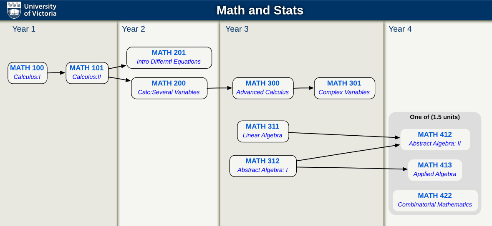
Above you see a very simplified version of a potential map for a Math and
Stats program. At its core, the map has one meta component, the program,
and three main components: year designations,
required courses, and electives. Keep in mind that these designations
do not directly correspond to the official university policies and graduation
requirements of similar names specified in the Calendar. For example,
saying a course is Required in CourseMapper does not mean it is an
absolute requirement for graduation.
The Program
Outlining a program is one of the main uses of CourseMapper. A program
should be thought of as a potential path to graduation. That is to say,
a program does not attempt to illustrate every possible way to graduate
with a specific degree (that is the Calendar's job), but instead offers concrete
suggestions about what to take and when to take it (perhaps with some choices)
in order to finish a degree in four years.
Programs can be more specific than anything on the Calendar and as such
can be thought of as what an ideal student with a particular interest actually
does while at university. If your department has many, many electives
to choose from, you might create several versions of a program, each
with different emphasis. Following one of these programs exactly would not be a
requirement for graduation, but seeing such a program would help to visualize possible paths to graduation.
Year Designations
The output map from CourseMapper is divided into four columns, one for each year,
representing the suggested year in which a course should be taken. These years need
not correspond to (but should not contradict) the Calendar. For example, in the map
above, MATH 200 is suggested to be taken in second year (since it requires
two terms of prerequisites), even though second year standing is not a requirement for
MATH 200.
Required Courses
A course being Required in the context of CourseMapper
means that it shows up in your map with a black outline. Being required in
CourseMapper is distinct from being a university requirement in the Calendar.
You should think of a required course in your program in the following way: "A
course is required if there are no other reasonable alternatives
to graduate via this particular path."
Electives
Electives are courses that show on your map grouped by gray boxes.
These indicate where there is choice in your program. Electives in CourseMapper
need not be called Electives in official graduation requirements as specified
by the Calendar (or even have the word elective associated with them on your
output map). Instead, in the context of CourseMapper, think of Electives
as a technical term meaning there is a choice to be made in your program.
Basic Usage
CourseMapper allows you to create charts
showing how an ideal student might progress through
a particular major (possibly with specialty).
These charts can be used for planning purposes, or
they can be embedded on your department webpage to help
students navigate their degree program. Charts produced
by CourseMapper are meant to give perspective on the flow
of a program, but are not meant to include every detail of
a particular major or in any way replace the Calendar as
the source for university requirements.
Structure of CourseMapper
The CourseMapper application
has two main components: Course Chooser and Preview.
Course Chooser allows you to load
and inspect (look at pre-reqs, course descriptions, historical offerings)
any courses from the Banner database and then select the courses
you wish to include in your program. Preview is where you see a
flow-chart representation of your program with arrows
representing prerequisites. In Preview you can also adjust which arrows
display, make co-requisites, and add extra data about electives
(like links to detailed webpage descriptions).
Both components of CourseMapper can be accessed via the black menubar
at the top of the CourseMapper page.
Navigation
Changing views as well as loading and saving is done via the black
navigation bar at the top of the CourseMapper page. This bar should be used
to change between Welcome, Course Chooser, and Preview views
instead of the browsers forward and back buttons.
Creating a Chart
To create a chart, go to the Welcome page, enter the
title of your program and click Next to proceed to the
Course Chooser page. If there is already an old course map loaded,
click the New button in the top right of the black menubar to
clear the current chart and start afresh. On the graphic below, the user has
entered Math and Stats as the program title.
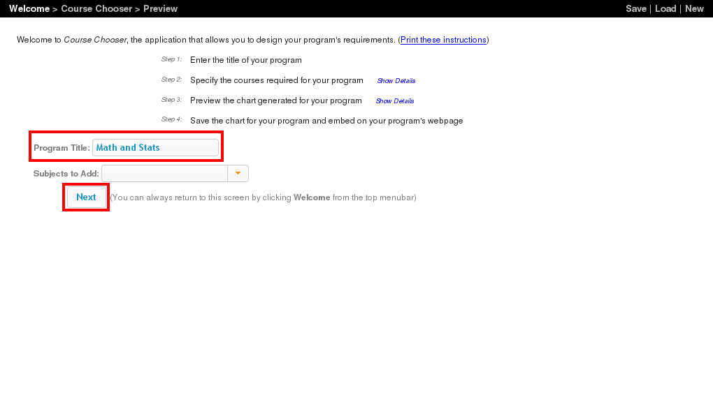
In the Subjects to Add textbox,
enter subjects or courses from which you wish to choose. You can
include multiple subjects or classes by specifying them in
a comma-separated list. Next, click Show. If you enter
a course subject, for example MATH, then all courses
from that subject will be shown. If you enter a full course designation,
for example MATH 100, then only that particular course will
be displayed. (This
means, if you already know exactly which courses belong in your program,
you can just enter them in a comma-separated list and only those courses will
be loaded). Note: courses loaded here come directly from a clone
of the Banner database,
so courses that do not exist in Banner cannot be loaded.
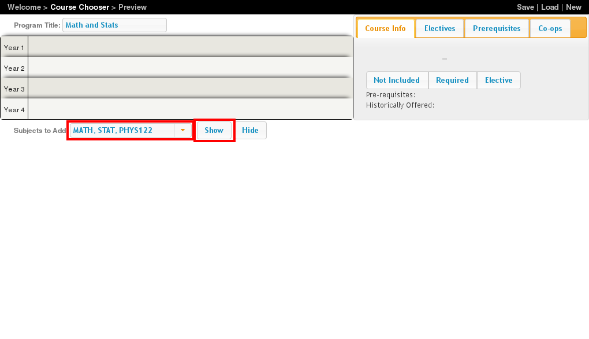
After you hit Show, you will see gray courses
displayed by year of study in the year chart. Gray courses will not show up in your final
graph. Instead, you must mark courses that you want to include as Required.
Marking courses as Required can be done in two ways: double click a course or
click a course once and then in the Course Info tab on the right,
click the Required button. A course can be made not required similarly,
by double clicking or clicking the Not Included button after selecting the course.
After you have selected all the courses required for your program, click
the Preview button in the top menubar to be taken to the graphical
version of your program.
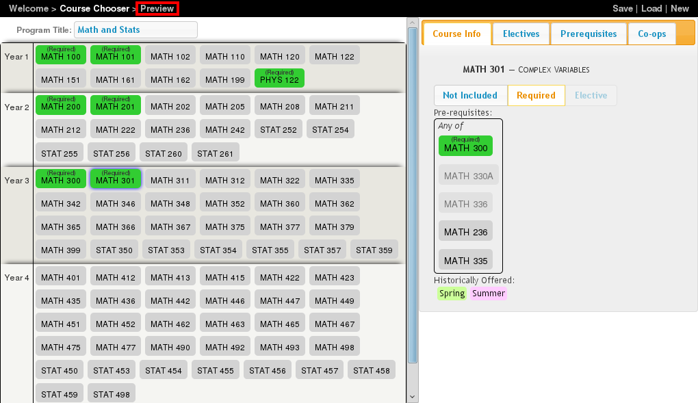
If you're happy with your program chart, you can click Save in
the top menubar, or you can click Course Chooser to
return to editing the courses in your chart.
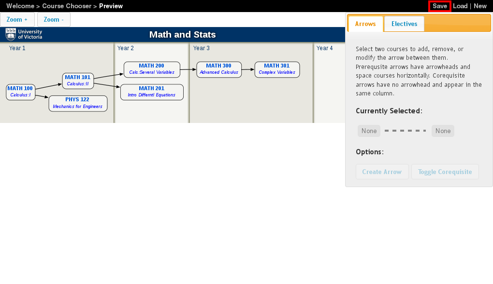
Course charts are saved in the SVG file format. The SVG file format
can be displayed by most web browsers and can be loaded back in CourseMapper
for future editing. However, for maximum portability, you can export your
SVG to an image or PDF. See Exporting
to Other Graphical Formats.
Exporting to Other Graphical Formats
When you save a chart from CourseMapper, it is saved as an
SVG image. Embedded in this image is all the data
needed to reload and continue working on/editing your chart with CourseMapper in the future.
However, you may wish to convert your chart to different file formats
for putting on your webpage or distributing.
To convert your chart you will need the free program
Inkscape. You can download Inkscape for Mac,
Windows, and Linux at
inkscape.org.
Exporting to Image (PNG) using Inkscape
PNG is a static image format suitable to include
on your department webpage. To export your chart to a PNG,
first open it in Inkscape. Then, choose File >
Export Bitmap from the Inkscape menu.
When the export dialog appears, click Browse to choose
a file name for saving the converted file. Make sure you include .png at
the end of your filename.
Finally, click the Export button, and your image
will be saved.
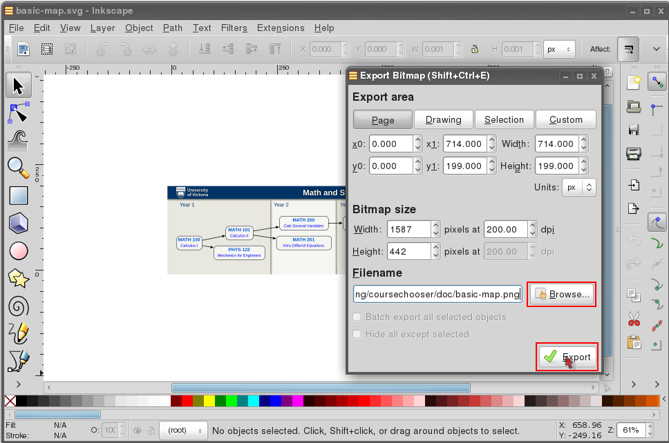
Exporting to PDF using Inkscape
To export your chart to a PDF, open the SVG
version in Inkscape, and then select File > Save As
from the Inkscape menu. Then, select Portable Document Format from
the list of Save-As types in the Save As dialog.
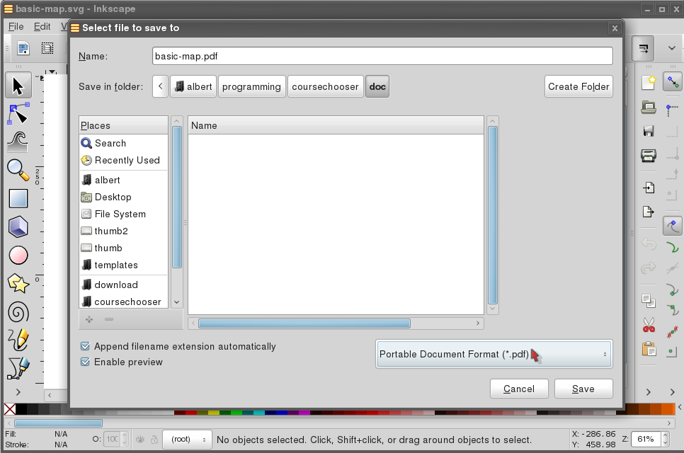
Click Save and when presented with the PDF export options,
click OK. Your PDF will now be saved.
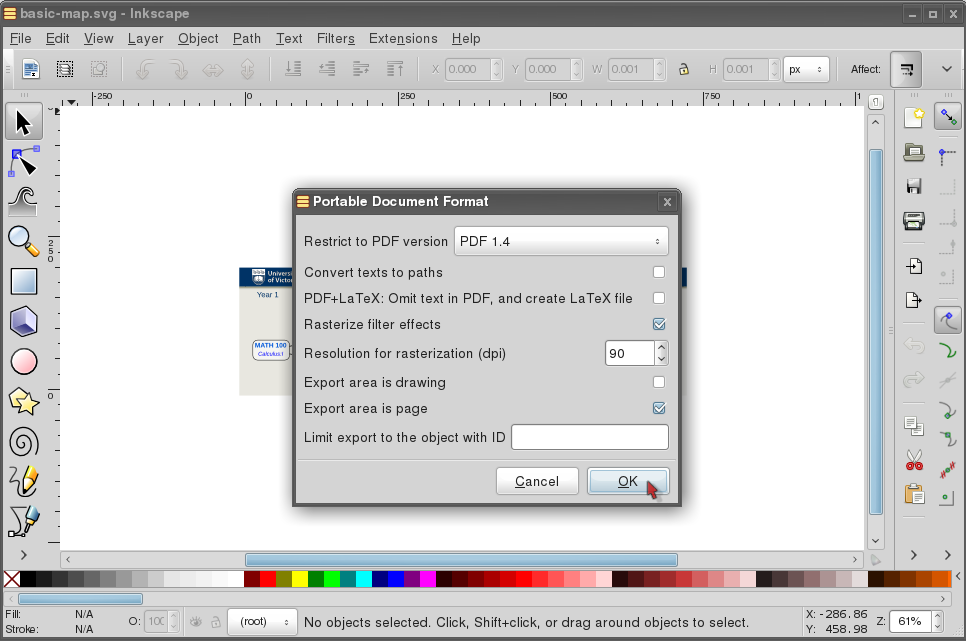
Adjusting Your Chart
Outlined are many of the ways you may wish to fine-tune your
chart. (Changes made to your chart do not change the data in Banner).
Changing the Year of a Course
By default, courses are sorted into years by their course number.
If you wish to change the year in which a course should be taken, go
to the Course Chooser page and drag and
drop that course to the appropriate year in the year chart.
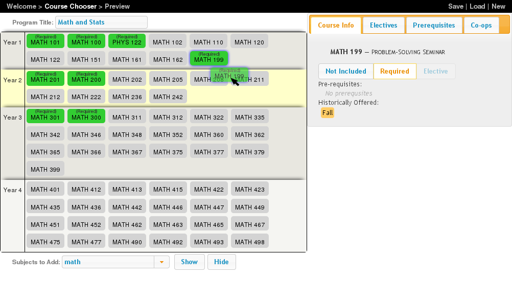
Hiding or Creating Arrows
By default, all arrows that appear are given
by prerequisites specified in Banner. You may want to add or hide
arrows to clarify the flow of your program. To hide an
arrow, go to the Preview
page and click the two courses connected by the arrow you wish to hide.
Then click the Remove Arrow button.
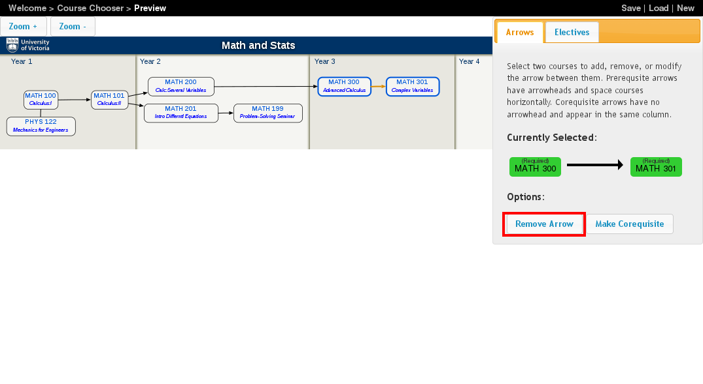
To create an arrow, from the Preview page, select the two courses
you wish to create an arrow between from tail to head. That is, if you
want an arrow from course A to course B, select course A first, and then select
course B. Then, click the Create Arrow button. If you mistakenly
create an arrow in the wrong direction, click Remove Arrow, deselect the
two courses (by clicking on each of them once more), select them in the opposite
order, and click Create Arrow again.
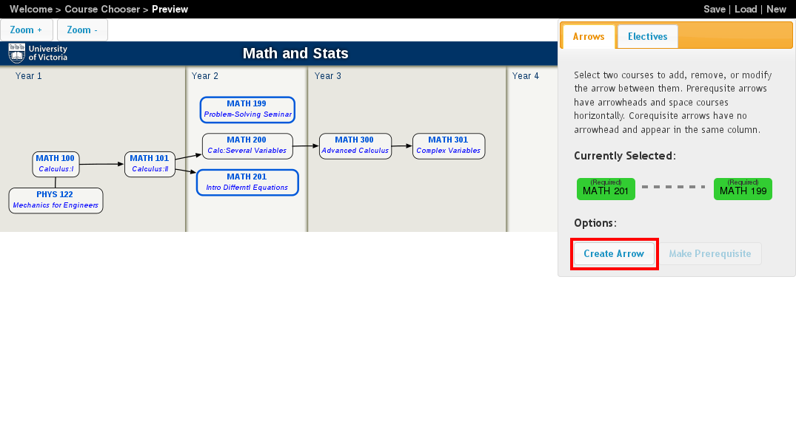
Creating a Co-requisite
By default, all requirements are shown as prerequisites, but your program
may have co-requisites. To create a co-requisite, select the two courses
you wish to be co-requisite (there must already be an arrow between them
or you must create an arrow between them for the next step) and click the
Make Corequisite button. The arrow will now be headless and the two
courses should be shown in the same column. To return a course to a pre-requisite,
select the two co-requisite courses and click Make Prerequisite.

Checking Prereqs
CourseMapper has knowledge of all the prerequisites specified in Banner and gives you two
different ways to view this information. It should be noted that CourseMapper interprets every
requirement in Banner as a pre-requisite. Co-requisites must be specified manually as explained
in the Adjusting section.
Individual Course's Prerequisites
To view an individual course's prerequisites, while on the Course Chooser page,
click the Course Info tab on the right side. Under the words Pre-requisites
will be a list of all the course's prerequisites. Prerequisites are either in a boxed group, which
means any of the courses in the box may fulfill the requirement, or they are separated by the word
and to signify that a course or block of courses is required. Courses you have already
marked as required or elective in your chart are shown as required or elective in the prerequisites
list. Courses that are half-grayed out are courses specified as prerequisites in Banner but are no
longer offered.
To ensure all prerequisites are included
in your chart, either add the course and make it required via the Subjects to Add
textbox, or click the course in the Pre-requisites list to have it automatically added. The graphic below
shows that our program is missing one of the requirements for MATH342.
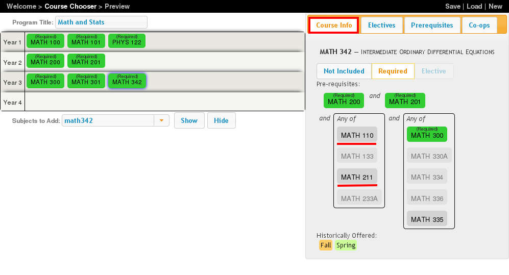
Checking a Program's Unmet Prerequisites
Because verifying that every course's prerequisites are satisfied one at a time is tedious,
CourseMapper provides a way to look at all unmet prerequisites. From the Course Chooser page,
clicking the Prerequisites tab on the right-hand side will give a (possibly empty) list
of unmet prerequisites. If the list is empty, all prerequisites for all required courses in your program
are met. Otherwise, as is the case in the image below, you will see a list of prerequisites that need to be
satisfied. Once they are satisfied, they will disappear from this list.
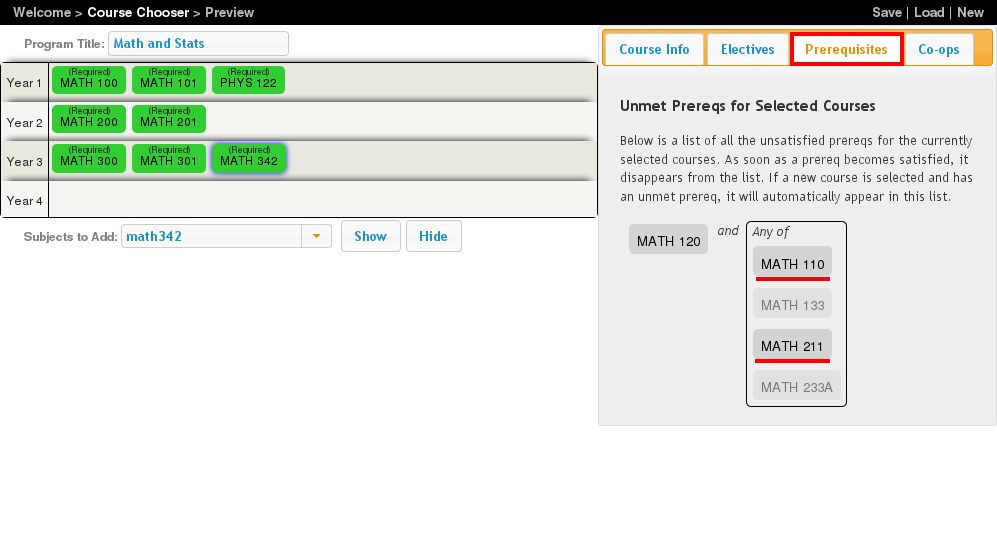
The unmet prerequisites list will dynamically update as you change your program. For example, if we remove
MATH100 and MATH101 from our program, we see they appear in the unmet prerequisites list (with MATH101 appearing
twice because it is required by both MATH200 and MATH201).
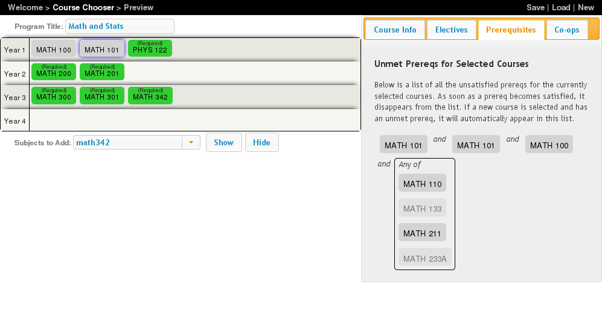
Adding Electives
CourseMapper allows you to add two different types of electives: an electives descriptor
and an electives block. An electives descriptor will appear as a gray box displaying
the text you specify on your graphical
chart. An elective block contains an explicit list of options for courses that satisfy
that elective.
Note that Electives is just the word we use to describe an element of your
graph where a student has a choice. It may be a requirement of your program, and you need
not have the word "elective" appear on your graphical chart.
Elective Descriptors
To create an elective descriptor, from the Course Chooser page, click the Electives
tab to the right. Then, click on Create New Electives Block. A gray electives box will show
up on your year chart.
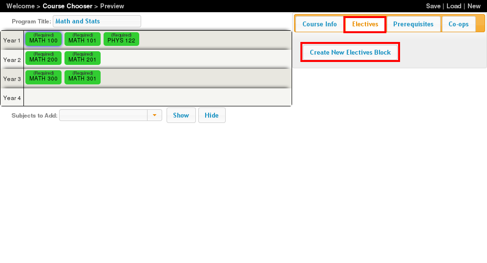
You may drag and drop this electives box to the desired year and edit the title and required
number of units to suit your needs.
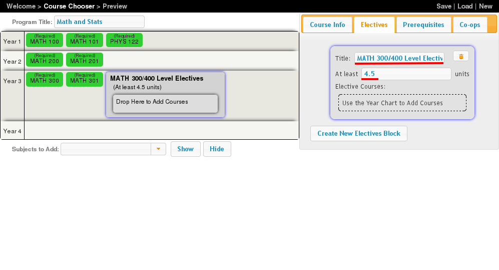
Elective descriptors can also include extra descriptions and links to further information. To
add these data, go to the Preview page and click your elective descriptor. On the right
you will be presented with a place to enter a description and a link to more information.
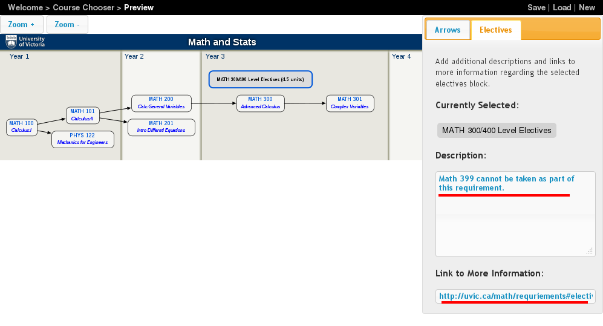
Elective Block
The difference between an elective descriptor and an elective block is that an elective block has an
explicit list of courses from which to choose. To create an elective block, the procedure is the
same: From the Course Chooser page, click the Electives tab to the right and
click Create New Electives Block.
In the same way as with elective descriptors, you can edit the text and required units of your
elective block.
To populate your elective block with courses, drag and drop them into the elective block.
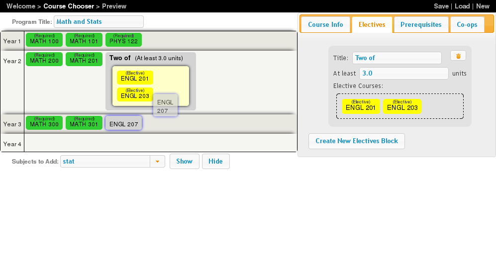
Your electives block will show up in your graphical chart as a gray box enclosing every
course you specified. It should be noted that the prerequisites of the courses specified
in your elective block will be included in the Prerequisites tab in CourseMapper
and prerequisite arrows will appear in the graphical chart. If your course options have complicated
prerequisites between each other, CourseMapper will attempt to structure them, but this
may result in a strange looking chart.
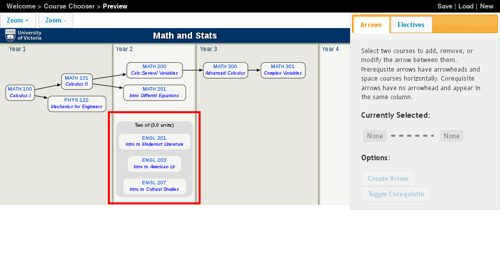
Deleting Electives
To delete an elective descriptor or an elective block, from the Course Chooser page, click the
Electives tab and click the trash icon in the upper-right of the elective you wish to delete.
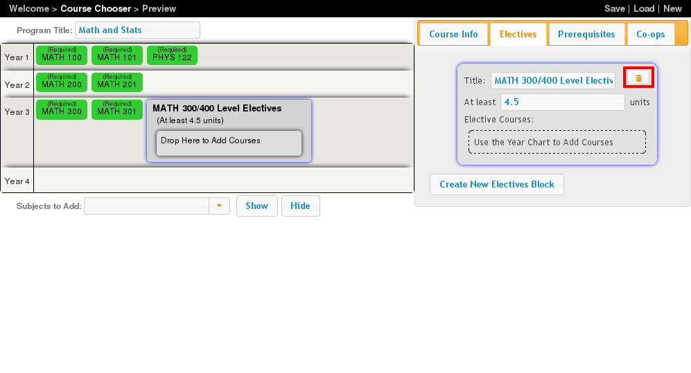
Co-ops
Co-ops are treated differently by CourseMapper than a regular course,
since co-op requirement normally span several years and offer great flexibility
as to the term in which they are taken. To create a co-op, from the Course Chooser
page, click the Co-ops tab to the right and then click Create New Co-op
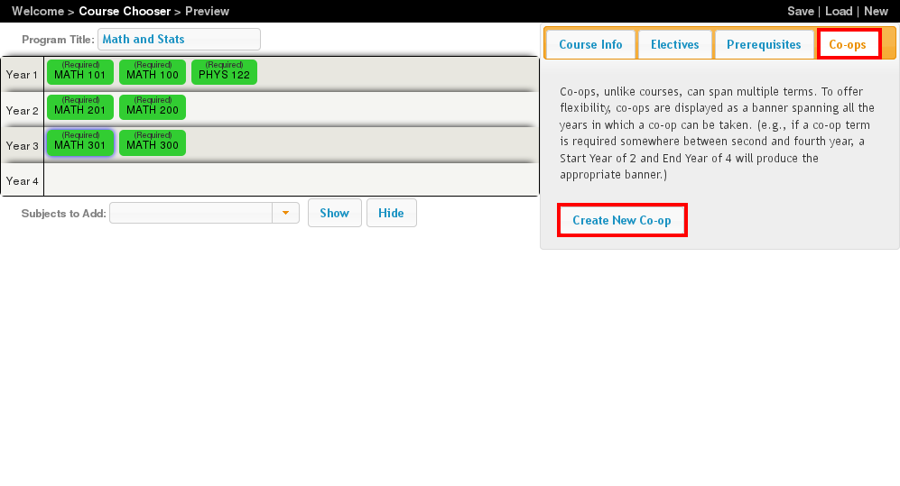
Your co-op will not show up in the list of courses on the Course Chooser page,
but it will show up in the graphical version of your chart. After creating a co-op,
you should specify its label (description), the year-span you wish it to show up for,
and a link to more information about that co-op and its requirements.
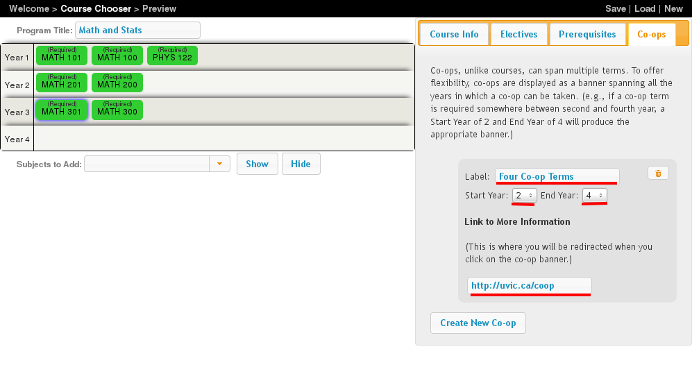
When you click Preview you will now see a co-op Banner spanning the years
you specified.
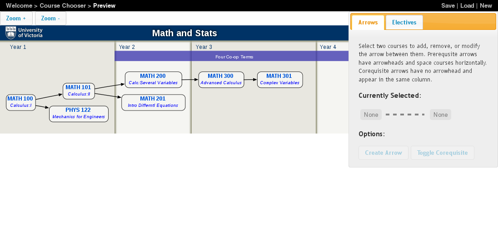
Who created CourseMapper?
CourseMapper was originally the idea of Teresa Dawson of the
UVic Learning and Teaching Center. She was hoping for a tool to help faculties design and redesign their
curricula. She teamed up with Math Ph.D. candidate Jason Siefken
for the technical and programming part, and the results of their collaboration have far exceeded anyones initial expectations.